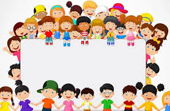

¡Manos a la obra, equipo!
Ha llegado el momento de demostrar todo lo que habéis aprendido. Para completar nuestra aventura, cada grupo debe realizar estos dos retos:
Reto 1: El Mural de los Ceros (Infografía)
- ¿Qué hay que hacer?: Cread una infografía en Canva donde expliquéis con ejemplos el "truco de los ceros" y mostréis los datos de población de nuestra zona.
- Soporte Digital: Una vez terminada, debéis pegar el enlace de vuestro diseño en la tarea correspondiente de Microsoft Teams.
Reto 2: Un minuto en el mercado (Vídeo)
- ¿Qué hay que hacer?: Grabad un vídeo corto representando una escena de compra y venta en un mercado rural. Debéis usar monedas, calcular el cambio correctamente y controlar el tiempo con un reloj.
- Soporte Digital: Subid el archivo de vídeo directamente a la carpeta de "Archivos" de nuestro equipo en Teams.
